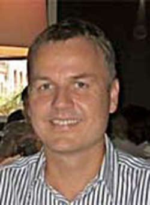
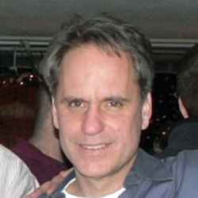
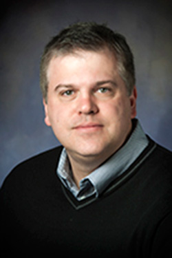

Principal Investigators
Michael Hildreth, PI
Professor, Physics
University of Notre Dame
AB, Princeton University, 1988
PhD, Stanford University, 1995
This email address is being protected from spambots. You need JavaScript enabled to view it.
PI Hildreth has been supported by eight different NSF and DoE grants since 2000, including an Outstanding Junior Investigator award from 2002-2006. He has been involved in HEP software development and management over his entire time at Notre Dame. He served as convener of the Central Fiber Tracker and General Tracking groups, and spent two years as overall Offline Software Coordinator of the DØ experiment. He is currently part of the CMS Offline Software management team in his third year as convener of the CMS Simulation group.
Douglas Thain, Co-PI
Associate Professor, Computer Science and Engineering
Director of Graduate Studies
University of Notre Dame
PhD, University of Wisconsin at Madison, 2004
This email address is being protected from spambots. You need JavaScript enabled to view it.
Co-PI Thain has been supported by six NSF research grants and one research infrastructure grant since 2004. The most related to this work is the CAREER grant (“CAREER: Data Intensive Grid Computing on Active Storage Clusters”, 2007-2012). A significant output of this research project was the production of software prototypes that have been taken up by various user communities. For example, the Parrot interposition agent has seen use with the CDF, CMS, and MINOS experiments, the Chirp filesystem has seen use the ATLAS, and the Makeflow workflow system, used in the bioinformatics community.

Jaroslaw Nabrzyski, Co-PI
Director, Notre Dame Center for Research Computing
Associate Professor, Computer Science and Engineering
University of Notre Dame
PhD, Poznan University of Technology, 2000
This email address is being protected from spambots. You need JavaScript enabled to view it.
Co-PI Nabrzyski is a co-PI on several NSF and NIH related awards. The EarthCube Research Coordination Network for High-Performance Distributed Computing in the Polar Sciences supports advances in computing tools and techniques that will enable the Polar Sciences Community to address significant challenges, both in the short and long-term. Nabrzyski is a co-PI (with M. Hildreth as the PI) on the NSF award to organize a series of workshops to gauge community requirements for public access to data from NSF-Funded Research.
Nabrzyski is also the PI on a BlueWaters allocation award “Strategies for Topology and Application Aware Job Resource Management in 3D Torus-based Blue Waters

Robert Gardner, Co-PI
Senior Fellow, Computation Institute
Senior Scientist, Enrico Fermi Institute
University of Chicago
This email address is being protected from spambots. You need JavaScript enabled to view it.
Co-PI Gardner has been supported by NSF as PI for the ATLAS Midwest Tier 2 Center at the University of Chicago (NSF Cooperative Agreement, “U.S. ATLAS Operations: Empowering University Physicists to make Discoveries at the Energy Frontier”, PHY-11- 19200 and PHY-06-12811).

Mark Neubauer, Co-PI
Assistant Professor, Physics
University of Illinois at Urbana-Champaign
BS, Kutztown University, 1994
PhD, University of Pennsylvania, 2001
This email address is being protected from spambots. You need JavaScript enabled to view it.
Co-PI Neubauer has been supported by the DoE since 2007. He is supported by the NSF as PI of “CAREER: Development of a Fast Hardware Tracker for ATLAS and Massively Parallel Computing Strategies for Integrated Research, Education, and Outreach in Particle Physics” (2011-2016), and PI for the ATLAS Midwest Tier-2 Center at the University of Illinois at Urbana- Champaign (part of the NSF Cooperative Agreement, “U.S. ATLAS Operations: Empowering University Physicists to make Discoveries at the Energy Frontier”, PHY-11-19200 and PHY-06-12811) in collaboration with the National Center for Supercomputing Applications. Neubauer created, in collaboration with Frank Wurthwein at MIT in 2001, the CDF Analysis Facility (CAF), which is still used by CDF for distributed analysis computing. Neubauer is currently serving as the Application Software Manager for US ATLAS.